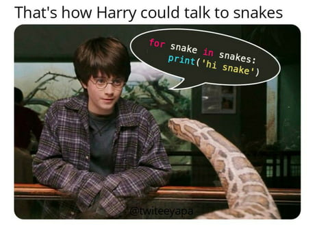
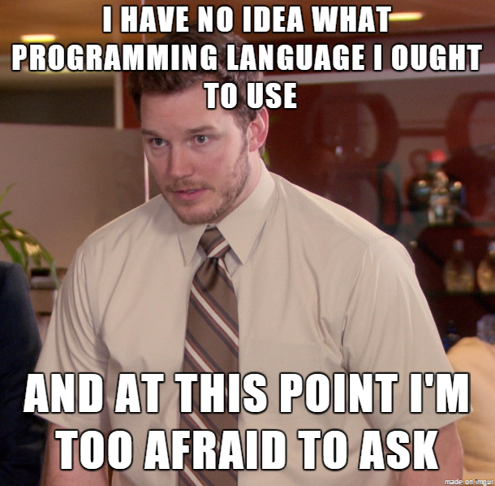
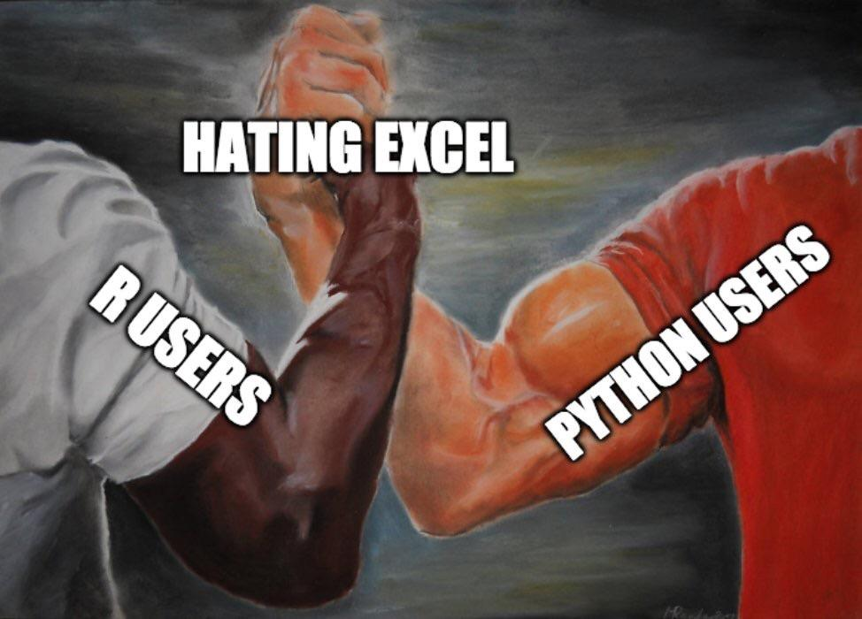

Everyone knows the only way to truly learn something is to relate it back to Harry Potter. Okay, maybe that’s not true- but it definitely helps. You all remember Parseltongue, right? Harry (& Voldemort!) used Parseltongue to speak to pythons, so maybe we can use Python to speak Parseltongue? I imagine it would go something like this.

So I tried that with the snake in my backyard- didn’t work. But you CAN use another language with Python - R! Turns out they can talk to each other, no snakes involed (much safer).
For example, say you wanted to cast a cute friendship spell as such:
library(reticulate)
Voldemort<-"Avada"says="Kedavra!"
print(r.Voldemort,says)## Avada Kedavra!So easy! I always thought Python was too hard to learn (maybe it’s easier for Slytherins?) but knowing I can still use R gives me the safety net I need while I’m still learning.
Now we’re going to use this dataset from Dan Martin containing a list of every Harry Potter character. Say we wanted to do something ridiculous like find all the people whose name starts with an H and ends with an R. Let’s use both R and Python to do it!
#R
HP<-read.csv("https://raw.githubusercontent.com/dpmartin42/Networks/master/Harry%20Potter/data/HP_links.csv")
head(HP)## Label link
## 1 Hannah Abbott Hannah_Abbott
## 2 Ludo Bagman Ludo_Bagman
## 3 Bathilda Bagshot Bathilda_Bagshot
## 4 Katie Bell Katie_Bell
## 5 Cuthbert Binns Cuthbert_Binns
## 6 Regulus Black Regulus_Blacklibrary(tidyverse)## ── Attaching packages ────────────────────────────────────────────────────────── tidyverse 1.3.0 ──## ✓ ggplot2 3.3.0 ✓ purrr 0.3.4
## ✓ tibble 3.0.1 ✓ dplyr 0.8.5
## ✓ tidyr 1.0.2 ✓ stringr 1.4.0
## ✓ readr 1.3.1 ✓ forcats 0.5.0## ── Conflicts ───────────────────────────────────────────────────────────── tidyverse_conflicts() ──
## x dplyr::filter() masks stats::filter()
## x dplyr::lag() masks stats::lag()HP<-HP%>%select(Label)%>%rename(name=Label)
string <- paste(HP$name, collapse = " , ")#python
import re
names=re.findall(r'H[a-zA-Z]+\s[a-zA-Z]+r[^a-z]',r.string)
print(names)## ['Hermione Granger ', 'Harry Potter ']There you have it! A totally practical and super realistic application of using both R and Python in RStudio. Now, with so many options you MAY be feeling a little like this guy:

But no fear! At least we all can agree…
